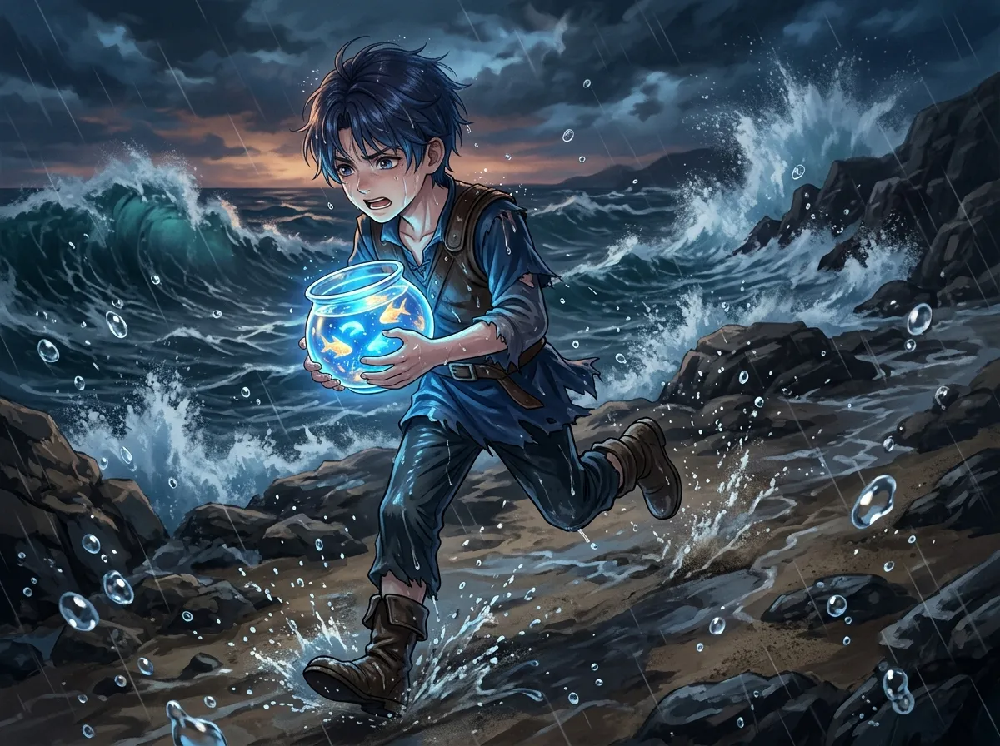
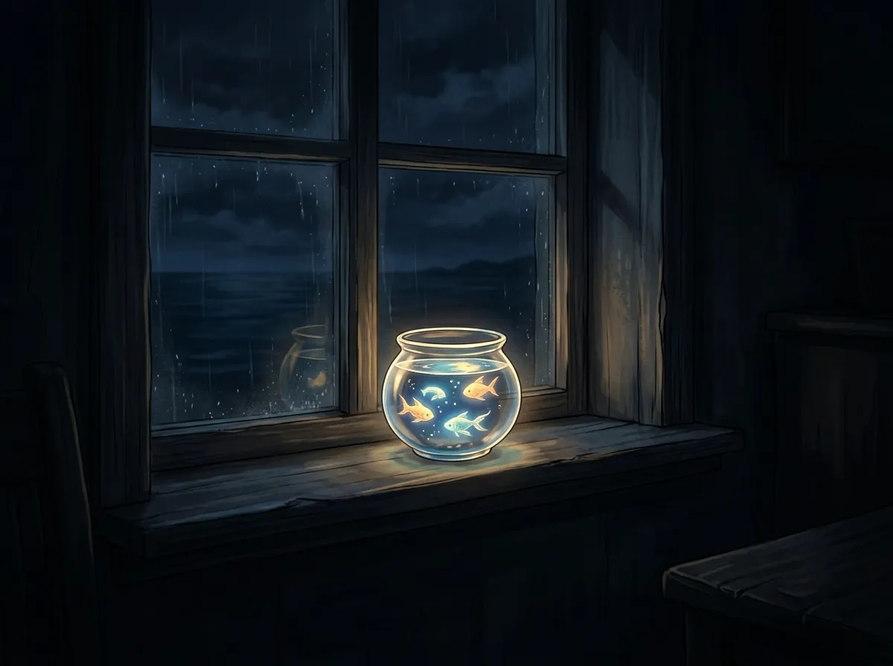
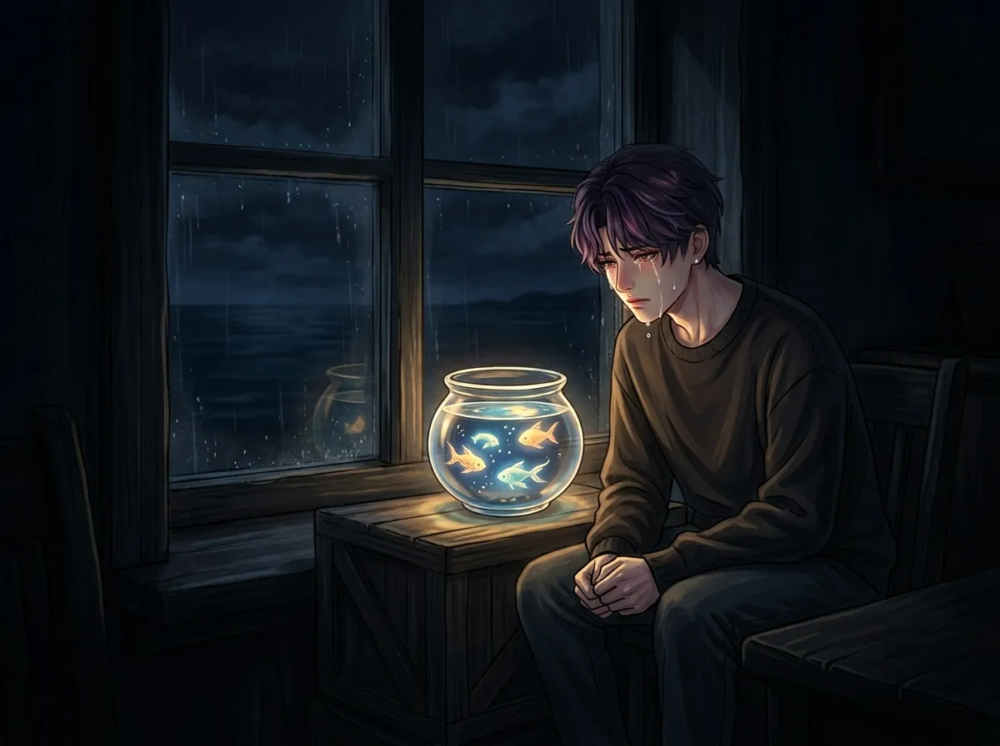
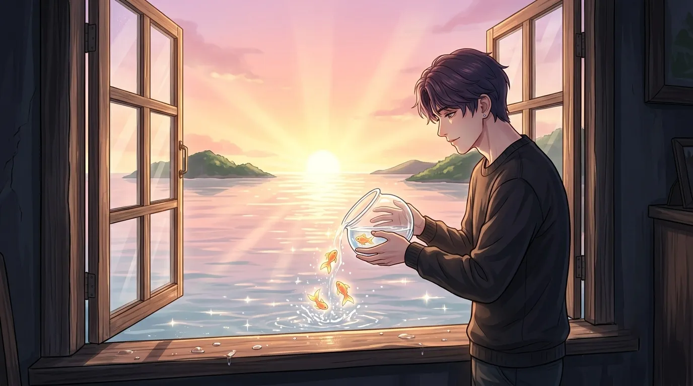
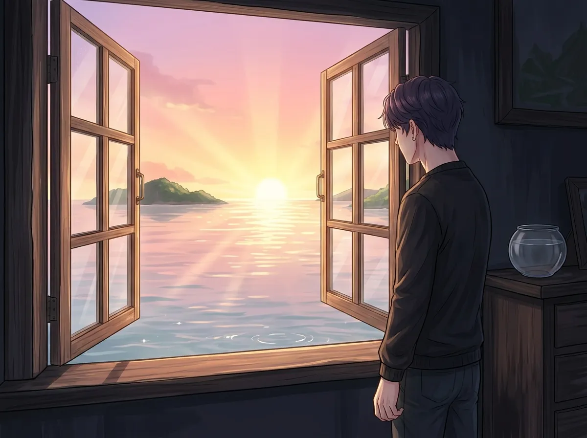

It wasn't a pet. It was the last thing from home. It left too.
It wasn't a pet. It wasn't a decoration. It wasn't something he bought.
It was the last thing he took with him when he left the sea. The last living thing that came from the kingdom that no longer exists.
It was a fish. A small fish. A fish that glowed in the dark. A fish that swam in circles in a glass bowl on his windowsill.
He didn't know why he took it. He didn't know why he kept it. He didn't know why he let it go.
He only knew that it was the only thing that made him feel like he still had a home.
This is the story of that fish.

When he left the sea, he couldn't take anything. The kingdom was falling. The water was rising. The palace was collapsing. There was no time. There was no room. There was no way to carry anything from the place he had called home.
He took one thing. One small thing. One living thing. A fish. A fish that glowed in the dark. A fish that had been in his room since he was a child. A fish that had seen him grow up. A fish that had seen him become someone he didn't recognize.
He took it because he couldn't leave it behind. He took it because it was the only thing that still remembered the sea. He took it because it was the only thing that still remembered him.
He carried it to the surface. He carried it to the world above. He carried it to the place he would learn to call home, even though it never felt like home.
He took the fish because he couldn't leave it behind. He took the fish because it was the only thing that still connected him to the sea. He took the fish because it was the only thing that still remembered who he used to be.
He didn't know if the fish would survive. He didn't know if the fish would thrive. He didn't know if the fish would remember the sea.
He only knew that he couldn't leave it behind. He only knew that he needed something from home. He only knew that the fish was the only thing that could come with him.

He put the fish in a bowl. A small glass bowl. On the windowsill of his new room. The room was small. The room was cold. The room didn't feel like anything.
The fish glowed. The fish glowed at night. The fish was the only light in his room. The fish was the only thing that made the room feel less empty. The fish was the only thing that made the room feel less alone.
He watched it swim. He watched it swim in circles. He watched it swim in the same pattern over and over. He watched it swim like it was trying to find something. He watched it swim like it was trying to find the sea.
He didn't know if the fish was happy. He didn't know if the fish was sad. He didn't know if the fish remembered the sea. He only knew that it was the only thing in the room that was alive. He only knew that it was the only thing in the room that was real.
The fish glowed. The fish glowed at night. The fish was the only light in his room. The fish was the only thing that made the room feel less empty.
He watched it swim. He watched it swim in circles. He watched it swim like it was trying to find something. He watched it swim like it was trying to find the sea.
He didn't know if the fish was happy. He didn't know if the fish was sad. He only knew that it was the only thing in the room that was alive. He only knew that it was the only thing in the room that was real.

The fish saw him cry. The fish was the only one. The fish was the only thing that saw him fall apart. The fish was the only thing that saw him grieve. The fish was the only thing that saw him miss the sea.
He sat in the dark. The fish glowed. The fish was the only light. The fish was the only thing that stayed. The fish was the only thing that didn't leave.
He talked to the fish. He told it about the sea. He told it about the palace. He told it about the people he lost. He told it about the kingdom that was gone. He told it about the home he would never see again.
The fish didn't respond. The fish didn't need to respond. The fish just swam. The fish just glowed. The fish just stayed.
The fish was the only thing that knew he cried. The fish was the only thing that knew he was broken. The fish was the only thing that knew he was not okay.
The fish saw him cry. It was the only one. It was the only thing that saw him fall apart. It was the only thing that saw him grieve. It was the only thing that saw him miss the sea.
He talked to the fish. He told it everything. He told it about the sea. He told it about the palace. He told it about the people he lost. He told it about the kingdom that was gone.
The fish didn't respond. The fish didn't need to respond. The fish just stayed. The fish just listened. The fish just glowed.
The fish was the only thing that knew. The fish was the only thing that saw. The fish was the only thing that stayed.

One day, he opened the window. He didn't know why. He just did. He needed air. He needed light. He needed something.
He looked at the fish. The fish was swimming. The fish was swimming in circles. The fish was swimming like it had been swimming for years. The fish was swimming like it would never stop.
He looked at the fish. He looked at the sea. He looked at the fish. He looked at the sea. He didn't know what to do.
He picked up the bowl. He carried it to the window. He looked at the fish one last time. He poured it into the sea.
The fish disappeared. The fish swam away. The fish was gone.
He didn't know why he let it go. He didn't know if it was the right thing to do. He only knew that he couldn't keep it anymore. He only knew that it didn't belong in a bowl. He only knew that it belonged in the sea.
He opened the window. He picked up the bowl. He carried it to the window. He poured it into the sea. The fish disappeared. The fish swam away. The fish was gone.
He didn't know why he let it go. He didn't know if it was the right thing to do. He only knew that he couldn't keep it anymore. He only knew that it didn't belong in a bowl. He only knew that it belonged in the sea.
He didn't know if the fish would survive. He didn't know if the fish would find its way home. He only knew that it was free. He only knew that it was where it belonged.
He didn't know if he would ever see it again. He never did.

The fish never came back. The fish never swam back to the window. The fish never glowed in his room again. The fish was gone.
He didn't know if the fish was alive. He didn't know if the fish was dead. He didn't know if the fish had found its way home. He didn't know if the fish had found the sea.
He only knew that the bowl was empty. He only knew that the windowsill was empty. He only knew that he was empty.
He kept the bowl. He kept it on the windowsill. He kept it empty. He kept it because he couldn't throw it away. He kept it because it was the only thing he had left from home. He kept it because it reminded him of the fish that swam away.
He never got another fish. He never got anything else. He never filled the bowl again. He never filled the emptiness again.
The fish never came back. The fish never swam back to the window. The fish never glowed in his room again. The fish was gone.
He kept the bowl. He kept it on the windowsill. He kept it empty. He kept it because he couldn't throw it away. He kept it because it was the only thing he had left from home. He kept it because it reminded him of the fish that swam away.
He never got another fish. He never got anything else. He never filled the bowl again. He never filled the emptiness again.
He doesn't know why he kept the bowl. He doesn't know why he couldn't throw it away. He only knows that it's still there. On the windowsill. Empty.
Rafayel had a fish once. It wasn't a pet. It wasn't a decoration. It was the last thing from home. The last thing that remembered the sea. The last thing that remembered him.
It swam in circles on his windowsill. It glowed at night. It was the only light in his room. It was the only thing that stayed.
It saw him cry. It was the only one. It never told anyone.
He opened the window. He poured it into the sea. He let it go. He let it swim away.
He never saw it again. He never knew if it survived. He only knew that it was free. He only knew that it was where it belonged.
He kept the bowl. He kept it empty. He kept it on the windowsill. He kept it because he couldn't throw it away. He kept it because it was the only thing he had left from home.
He never filled it again. He never got another fish. He never got anything else. He never filled the emptiness again.